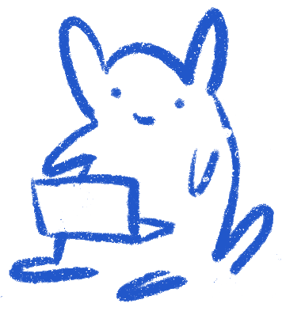

(click on me!)
I'm a first-year CS PhD student at Columbia University, advised by Kathleen McKeown. I research: 1) how LLMs can be used to study human culture, 2) how the humanities and social sciences can inform more inclusive AI development, and 3) where these two areas overlap.
Previously, I completed an M.A. in Digital Humanities at McGill University (advised by Andrew Piper) where my thesis focused on multilingual story moral generation (see full paper here and video explaining project for general audience here). I received my B.A. from the School of Advanced in Arts and Humanities Studies with a major in mathematics at Western University.
I strongly believe that if you are passionate about something, you have a responsibility engage meaningfully with its surrounding communities. Some of my past projects motivated by this include...
Always open to chatting about any of the above! My e-mail is "{firstname}.{lastname}@columbia.edu"!